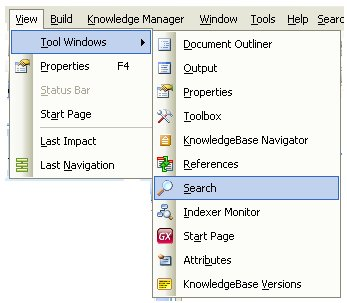
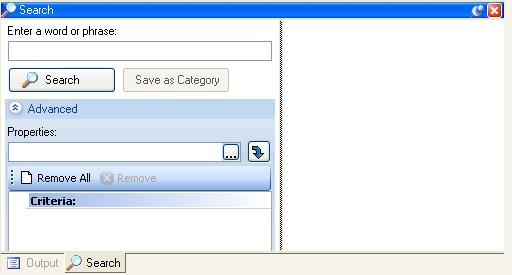
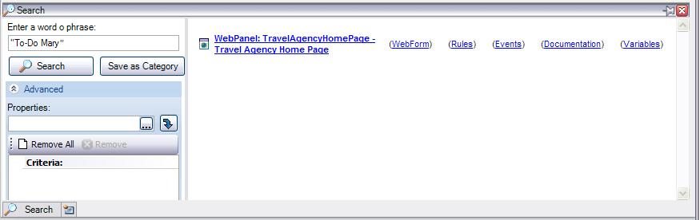
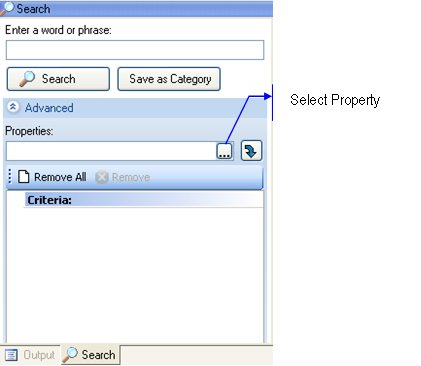
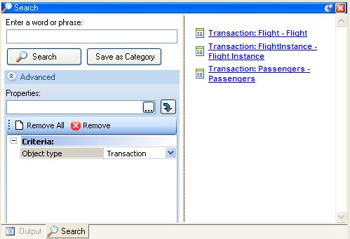

GeneXus provides a powerful search engine that allows you to quickly find anything in your Knowledge Base. You can search for any given text or even for specific property values (anything having property X with value Y). Based on complex algorithms, GeneXus' full-text search engine finds what you are looking for among what could be tons and tons of words contained in all objects making up the KB. Like most search engines, it allows you to use intuitive syntax to limit your searches. All search starts by the Search window. How to display the Search windowYou can display the Search window by:
Look at the following images: Option View \ Tool Windows \ Search Search Text Box in the menubarAs a result, in both cases, you will see the Search window:  Note: When the indexer is working (creating the index) or when objects are outdated in the index (for example when the indexer is stopped and objects have been updated since the last index created), a warning image () will be displayed. Example 1The following image shows how a "To-Do Mary" search can be done.  You can also query by specific property values by writing the query in the "Properties" text block which is inside the Search window Advanced area. You need to write a condition like "Object Type=Transaction". Note: The only searchable properties are those whose values have been predefined (they are usually presented in a combo box in the properties windows). For example, the Theme Dependant property can be searched but the Name property cannot be searched. Example 2Search for Transaction objects. Steps:
Look at the following images:   A query can be saved as a Category by clicking on Save as Category button. This allows you to see the results of predefined queries on the Category View. Additional Technical Information- This feature is implemented using Lucene indexer (also used in gxsearch). - The indexing process runs in the background while GeneXus is active. If you see that Genexus.exe uses some CPU even when you're not doing anything, this process may be indexing the Knowledge Base. - The indexing process assigns different weight to the indexed words (depending on whether they appear in rules, properties, if the complete word is found, distance of words). - Not all Lucene wildcards are supported. These are the supported ones:
- It is not supported to use leading wildcard characters. For example, you cannot search for *objectname* - Control characters like "(" are not taken into account by the indexer (i.e. "parm(" will return no results) - Underscore ("_") is a word separator for Lucene, this should be considered especially when doing exact searches on the knowledge base. Example: there are two procedures A and B procedure A, have the following comment: / / Comment and B: / / Comment_ario Then if we search for the word "comment" in the KB, the results of this search are both procedures. For lucene there are two words in procedure B, comment and ario because underscore is used as a word separator. TroubleshootingTo see if the indexing process is the one consuming your CPU, go to the <KB directory>\FTindex. Files in this directory should increase in size every 20 or 30 seconds in that case. See alsoFull Text Search Data Types, Full-Text Search in Applications
|
| Pages |
| Indexer Monitor |